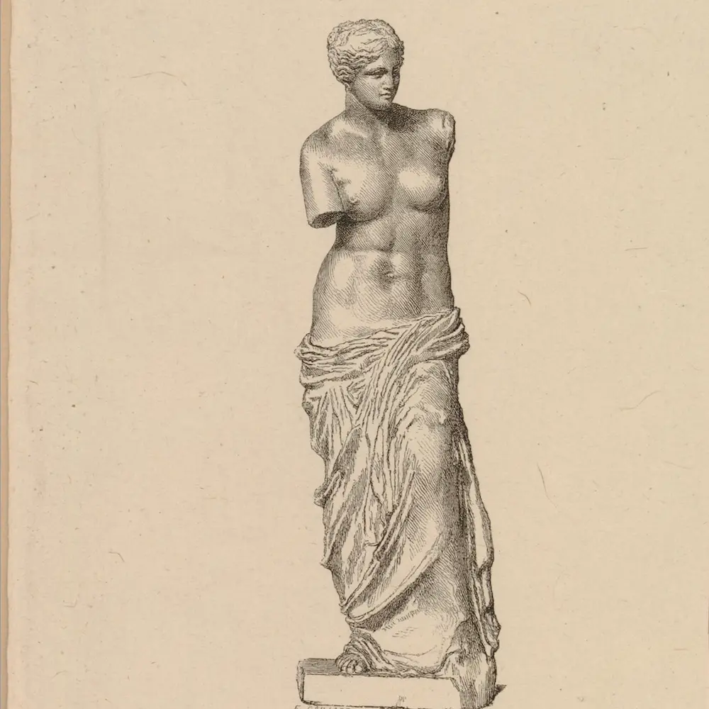

FORSIDE
KVINDENS ROLLE
EFTERTIDEN
TOLKNINGER
MERE VIDEN
ANTIKKENS KVINDER
En side om kvindens rolle i oldtidens Grækenland, og indflydelse på nutidens kvinder.
© THE TRUSTEES OF THE BRITISH MUSEUM
KVINDENS ROLLE I OLDTIDEN

© THE TRUSTEES OF THE BRITISH MUSEUM
DEN GRÆSKE KVINDES INDFLYDELSE PÅ EFTERTIDEN
© THE TRUSTEES OF THE BRITISH MUSEUM
TOLKNINGER, SAMTID, OG ØJNENE DER SER